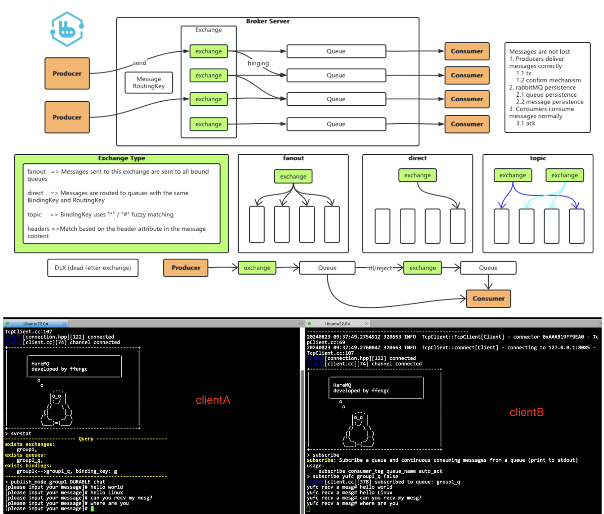
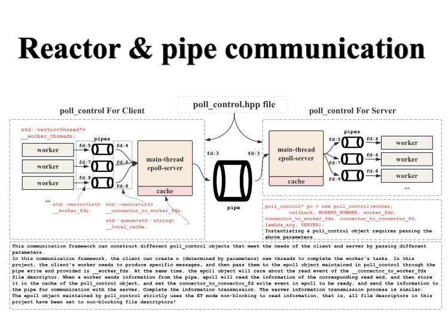
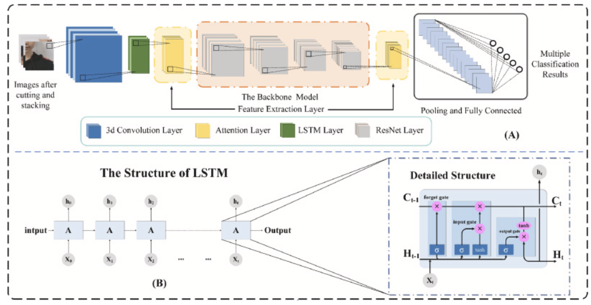

|

|
HareMQ
Project highlights: This is a simplified message queue component in C++ modeled
after RabbitMQ, focusing on efficiently handling the publish-subscribe mechanism. This project not
only reproduces the core architecture of RabbitMQ, but also optimizes the message transmission
process in a targeted manner, supporting cross-host message publishing, subscription and push
functions. During the implementation process, I used the muduo network library to build a stable
server-client communication framework, and designed the application layer protocol through protobuf
to ensure the efficiency and accuracy of data transmission. In addition, the project also integrates
the sqlite database for data persistence management, ensuring the reliability of the message system
and the security of the data. Through this project, I have a deep understanding and practice of the
high-performance implementation technology of the message queue, ensuring the high availability and
scalability of the system.
Related technologies: C/C++, C++11, Boost, Protobuf, Muduo, SQLite3, Gtest
Repo: https://github.com/ffengc/HareMQ
|

|
boost-search-engine
Project highlights: This project is a search engine implementation based on the
Boost library, aiming to provide an efficient and accurate search system specifically for searching
Boost documents. By elaborating on the search engine building process, from data preprocessing to
index creation, to search query processing and result presentation, this project shows how to build
a complete search engine system. The technology stack covers C++, Boost library, Html, CSS and
JavaScript, realizing back-end index construction and front-end user interaction. The basic
functions of the project are comprehensive, and advanced features such as word frequency statistics,
dynamically updated indexes, and search result priority sorting have been added, which significantly
improves search efficiency and accuracy. This makes the search engine particularly suitable for
developers to quickly find the technical documents they need when using Boost libraries, greatly
improving development efficiency and document accessibility.
Related technologies: C/C+, C++11, STL, Boost, Jsoncpp, cppjieba, cpp-httplib
html5, css, js, jQuery, Ajax
Repo: https://github.com/ffengc/boost-search-engine/
|

|
Load-balanced-online-OJ-system
Project highlights: Implement an online programming system similar to LeetCode.
Multiple compilation service hosts (CR hosts) can be deployed in the background,
and the oj_server service will load balance a large number of submitted requests to each CR host
through algorithms.
If a CR host crashes in the background, oj_server can also recognize it correctly.
Related technologies: C++STL, Boost standard library, cpp httlib library,
ctemplate library,
jsoncpp library, load balancing design, distributed systems, multi process/thread control,
MySQL C Connect, Ace editor, HTML/css/js/jquery/ajax
Repo: https://github.com/ffengc/Load-balanced-online-OJ-system
|

|
Google-tcmalloc-simulation-implementation
Project highlights: tcmalloc is a memory management project open sourced by Google.
I implemented the core functions in tcmalloc through learning and simulation, and implemented a
high-concurrency memory pool to replace the native malloc memory development method. Its design
purpose is to adapt to the characteristics of a single server with multiple CPU cores, and to ensure
that the performance of the memory allocator will not drop sharply due to multi-core competition. In
order to reduce memory usage, objects of the same memory size are concentrated in spans composed of
several adjacent pages.
Related technologies:
C++ STL, multi-threading, memory management algorithms, lock-free programming
Repo: https://github.com/ffengc/Google-tcmalloc-simulation-implementation
|

|
Multi-Pattern-Logging-System
Project Abstract: This project is mainly to implement a log system, which mainly
supports the following functions:
Support multi-level log messages
Support synchronous logs and asynchronous logs
Support reliable writing of logs to the console, files and rolling files
Support multi-threaded programs to write logs concurrently
Support the expansion of different log landing destinations
Core technology stack:
class hierarchy design (inheritance and polymorphism), C++11
(multi-threading, right value references, etc.), double buffer, producer consumer model,
multi-threading, design pattern (singleton, factory proxy, builder, etc.), GTest
Repo: https://github.com/ffengc/Multi-Pattern-Logging-System
|
|

|
Event-Driven-Pipeline-Communication-System-Framework
Project highlights: This project implements an efficient communication framework
between the client and the server through epoll, which is designed for high-performance I/O
operations. The architecture includes a client and a server. The client starts multiple worker
threads and generates data following a negative
exponential distribution according to the specified lambda parameter. These data are sent through
their respective pipes to the epoll service monitored by the poll_control class, ensuring the
efficiency of lock-free operations. The epoll service
handles read and write events, caches the data and sends it to the server, which is the same as the
client's data flow. Each data block is attached with a process and thread identifier to enhance
traceability.
Related technologies: C++STL, system programming, multiplexing technology
pipe communication
Repo: https://github.com/ffengc/Event-Driven-Pipeline-Communication-System-Framework
|

|
Dual-Thread-Pool-Based-Pipeline-Communication-System-Framework
Project highlights: This project implements a pipeline communication system
framework
based on dual thread pools from scratch, which is essentially communication between processes.
The thread pool object code of this project is highly maintainable and highly readable. Thread pool
objects can be easily reused in other projects
Related technologies: C++STL, system programming, Thread synchronization and mutual
exclusion,
pipe communication, RAII style lock package
Repo: https://github.com/ffengc/Dual-Thread-Pool-Based-Pipeline-Communication-System-Framework
|

|
Reactor-based-HyperWebServer
Project highlights: The project manually implemented an epoll server based on red
brick tree from scratch, and on this basis, encapsulated it into a reactor asynchronous IO
multiplexing server. Due to the
multiplexing feature, this network server can withstand high concurrency.
Related technologies: C++STL, system programming, multiplexing technology, html5,
css, js, jQuery, Ajax
Repo: https://github.com/ffengc/Reactor-based-HyperWebServer
|
|

|
Parkinson’s severity diagnosis explainable model based on 3D multi-head attention residual network
Authors: Jiehui Huang, Lishan Lin, Fengcheng Yu, Xuedong He, Wenhui
Song, Jiaying Lin, Zhenchao Tang, Kang Yuan, Yucheng Li, Haofan Huang, Zhong Pei, Wenbiao Xian,
Calvin Yu-Chian Chen
Project highlights:
We propose an effective facial video-based end-to-end PD severity diagnosis deep learning model,
which can extract features from PD patient videos and give robust and interpretable diagnosis
results.
We effectively integrate channel and spatial attention mechanisms into a 3D neural network
model, which ensures that the model can learn non-redundant features. In addition, the effective
embedding of LSTM and ResNet further strengthens the robustness of the model.
We effectively judge the severity of PD disease through various facial expressions of PD. In
addition, we also designed a series of interpretability experiments to provide further
explanations for our video analysis model, which is of great significance for assisting doctors
in diagnosis.
Our experimental results show that our lightweight model achieves competitive performance while
other deep learning models have suboptimal performance. We also performed a correlation analysis
between our diagnostic results and clinical data, and experimental results further confirmed the
reliability of our results.
Publishing: Computers in Biology and Medicine 2024
Link: https://www.sciencedirect.com/science/article/pii/S001048252400043X
|

 Mail:
yufch3@mail2.sysu.edu.cn
Mail:
yufch3@mail2.sysu.edu.cn GitHub: https://github.com/ffengc
GitHub: https://github.com/ffengc
 Blog homepage
Blog homepage